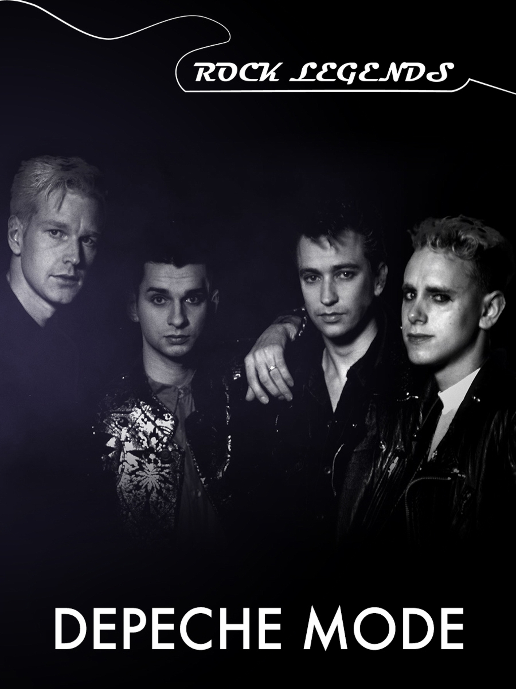
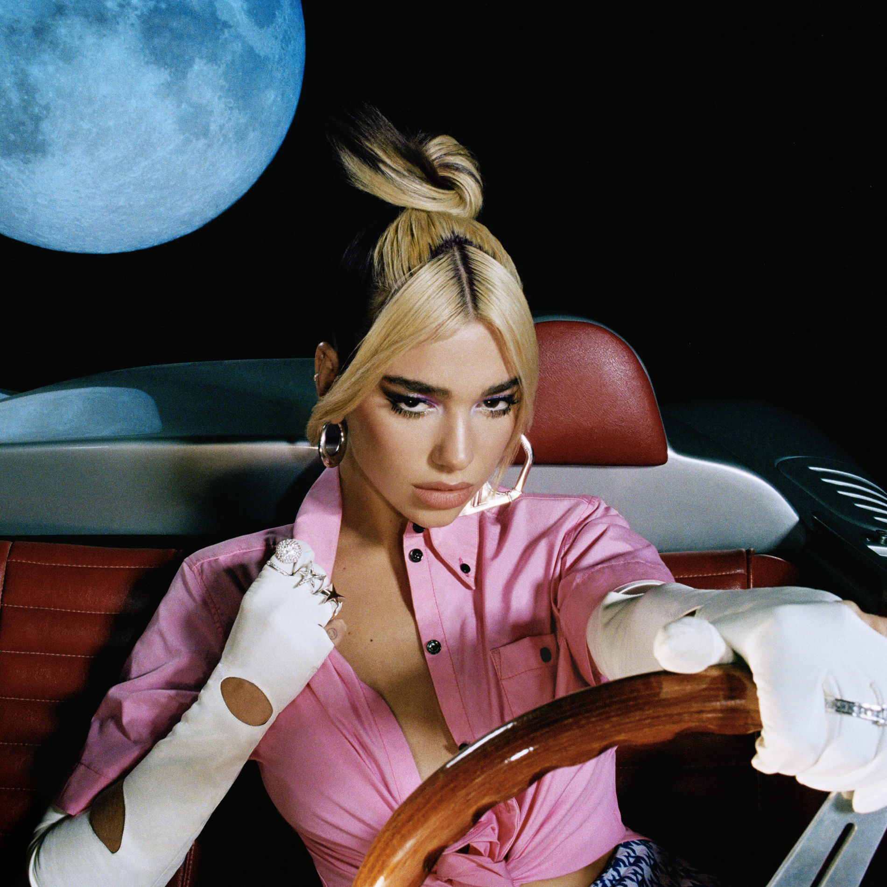

Популярні виконавці
На цій сторінці зібрано кілька виконавців з різним стилем та звучанням.

Korn
Nu metal з важким і впізнаваним звучанням.

Depeche Mode
Культовий гурт зі світу synth-pop.

Dua Lipa
Одна з найпопулярніших представниць сучасної pop-музики.

The Weeknd
Атмосферне звучання, R&B і впізнавані хіти.
Короткий список
Виконавці, представлені на сайті:
- Korn
- Depeche Mode
- Dua Lipa
- The Weeknd